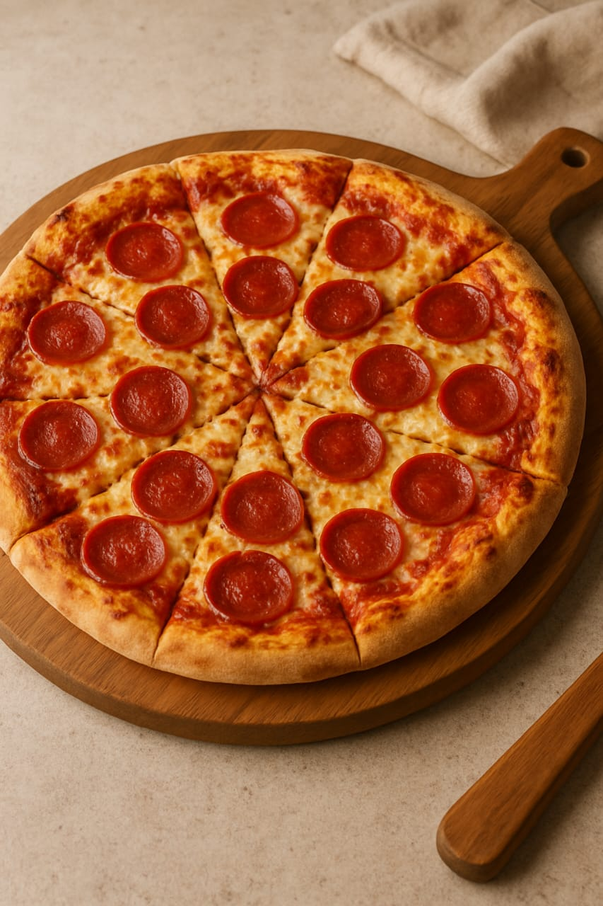
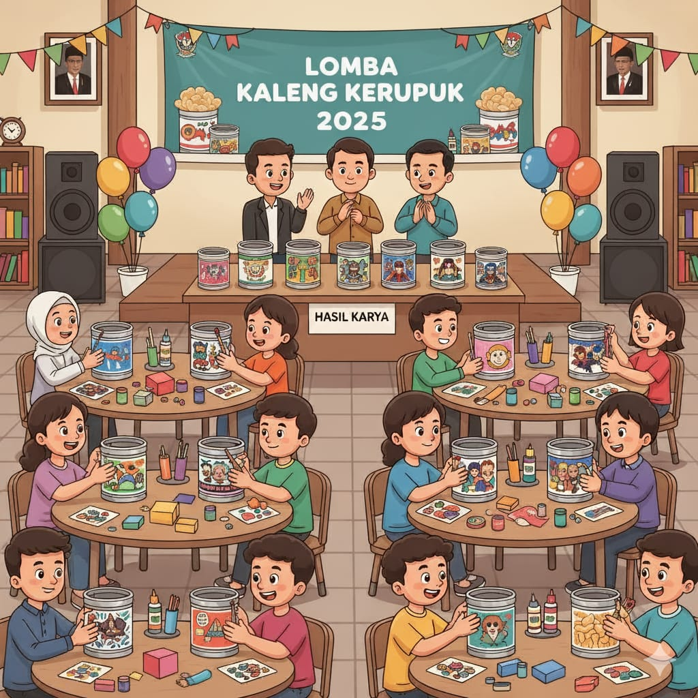
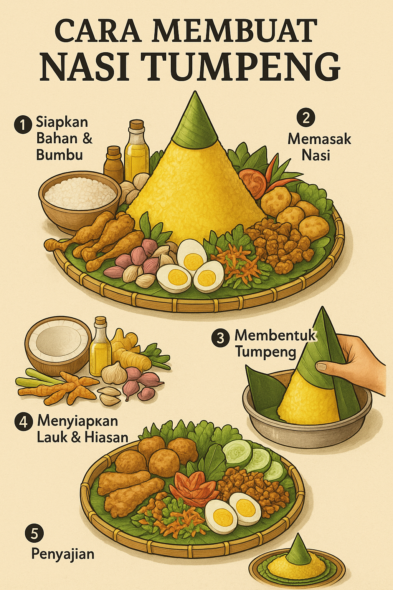
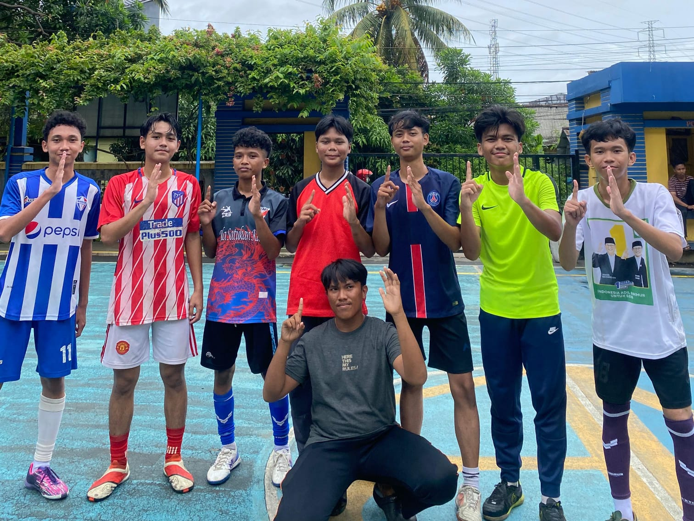
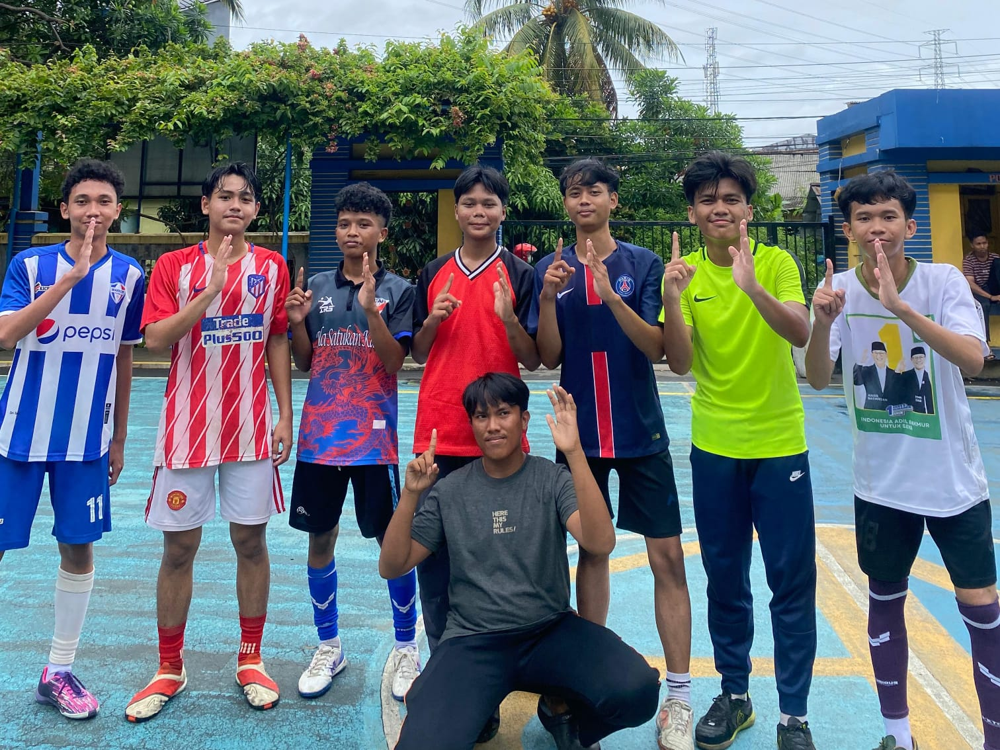

Olahraga 15 Sep 2024 • 15 min read
Real madrid berhasil memenangkan UCL ke 15
Real Madrid sukses menjadi juara Liga Champions Eropa untuk ke-15 kali sepanjang sejarah klub. Kesuksesan itu diperoleh usai Madrid menaklukkan Borussio Dortmund dengan skor 2-0 dalam final yang berlangsung di Stadion Wembley, London, Inggris, Minggu (2/6/2024) dini hari WIB.
Baca Selengkapnya →

Olahraga 30 Des 2025 • 7 min read
Barcelona akan kesusahan untuk memenangkan ucl tahun ini
Blaugrana kurang meyakinkan di awal Liga Champions musim ini. Dari lima pertandingan fase liga yang sudah dimainkan, Barcelona cuma dua kali menang dan dua kali kalah melawan rival-rival macam juara bertahan PSG 1-2 dan Chelsea 0-3.
Baca Selengkapnya →

Olahraga 25 Jan 2026 • 5 min read
Tampil disiplin, MU hajar Arsenal 3-2 di kandangnya
Drama lima gol mewarnai duel panas Arsenal kontra Manchester United (MU) dalam lanjutan matchday ke-23 Liga Inggris 2025/26 di Emirates Stadium pada Minggu (25/1) malam WIB.
Baca Selengkapnya →
Olahraga 18 Jan 2026 • 5 min read
12 rpl 2 berhasil memenangkan classmeet wb
Dengan dramatis 12 rpl 2 berhasil memenangkan classmeet futsal melawan 12 tkj 1, skor akhir 3-2 untuk kemenangan 12 rpl 2. Gol di cetak hattrick oleh julian bernomor pungung 10.
Foto Selengkapnya →

E-sport 25 Jan 2026 • 5 min read
Alter ego berhasil memulangkan 2 tim raksasa dan lolos grand final
Kalau bicara prestasi, tentunya yang paling berkesan adalah pertandingan Sabtu (24/1/2026) kemarin. Pasalnya, dalam semalam AE berhasil memulangkan dua tim raksasa yang digadang bakal menjadi finalis di M7. Tim yang dimaksud adalah SRG dan TLPH yang sudah dikenal sebagai tim dengan segudang prestasi.
Baca Selengkapnya →

E-sport 25 Nov 2025 • 5 min read
Atlet e-sport thailand ketahuan curang di sea games
Seorang atlet e-sports Arena of Valor (AOV) wanita asal Thailand bernama Naphat Warasin atau yang dikenal Tokyogurl, dikeluarkan dari SEA Games 2025. Dia kedapatan menggunakan perangkat lunak pihak ketiga yang tidak sah selama pertandingan berlangsung.
Baca Selengkapnya →

Makanan28 Sep 2025 • 8 min read
Resep Praktis Pizza Rumahan Lezat & Mudah Dibuat
Pizza merupakan salah satu hidangan internasional yang telah lama dikenal dan digemari oleh masyarakat dari berbagai kalangan. Asal-usulnya berasal
dari Italia, namun popularitasnya kini meluas ke seluruh penjuru dunia, termasuk Indonesia.
Nikmati pizza rumahan yang lezat dan mudah dibuat. Panduan lengkap adonan, topping, hingga memanggang. Cocok untuk semua kalangan. Coba resepnya sekarang!
Baca Selengkapnya →

Lomba29 Sep 2025 • 9 min read
Lomba Hias Kaleng Kerupuk 17 Agustus: Kreatif & Meriah
Setiap tanggal 17 Agustus, seluruh rakyat Indonesia merayakan Hari Ulang Tahun (HUT) Kemerdekaan Republik Indonesia dengan penuh semangat dan sukacita. Berbagai lomba dan kegiatan
tradisional hingga modern digelar untuk menyemarakkan momen bersejarah ini.
Lomba menghias kaleng kerupuk jadi kegiatan unik dan kreatif untuk 17 Agustus. Yuk, ramaikan
semangat kemerdekaan dengan cara seru dan edukatif!
Baca Selengkapnya →

Makanan 22 Sep 2025 • 11 min read
Pelajari sejarah, cara membuat, manfaat, dan peluang usaha pie susu—oleh-oleh Bali yang lezat
untuk semua kalangan
Pie susu adalah sejenis kue tart kecil yang terdiri dari kulit pie renyah berisi custard lembut berbahan
dasar susu dan telur. Camilan inimemiliki
rasa manis dan tekstur yang creamy di bagian tengah, dengan pinggirangaring dan tipis
Pelajari cara membuat pie susu dengan mudah disini
Baca Selengkapnya →

Makanan 23 Sep 2025 • 12 min read
Bolu Pisang Ambon: Resep Lembut dan Menggoda Selera
Pisang merupakan salah satu buah tropis yang sangat dekat dengan kehidupan masyarakat Indonesia. Rasanya manis, teksturnya lembut,
dan mudah ditemukan di berbagai pasar tradisional hingga swalayan modern.
Temukan cara membuat bolu pisang ambon yang lembut dan enak. Cocok untuk camilan keluarga dan ide jualan rumahan.
Baca Selengkapnya →

Makanan 15 Sep 2025 • 7 min read
Kentang Crispy: Resep & Tips Praktis Untuk Semua
Kentang goreng, atau dalam bahasa Inggris disebut French fries, adalah salah satu makanan paling populer di dunia. Namun, di balik kesederhanaannya,
camilan ini memiliki sejarah panjang yang menarik dan penuh perdebatan
Baca Selengkapnya untuk mengetahui sejarah Kentang crispy dan cara membuatnya agar lebih lezat.
Baca Selengkapnya →

Makanan12 Sep 2025 • 5 min read
Panduan Lengkap Membuat Nasi Tumpeng yang Mudah & Bernilai
Nasi tumpeng adalah hidangan tradisional Indonesia, simbol syukur, persatuan, dan budaya kekayaan kuliner Nusantara.
Meski tampak rumit, membuatnya bisa mudah jika mengikuti panduan yang sistematis
Pelajari bagaimana cara membuat nasi tumpeng yang mudah dan praktis.
Baca Selengkapnya →
Maaf, tidak ada artikel yang ditemukan untuk kata kunci ini.
 
